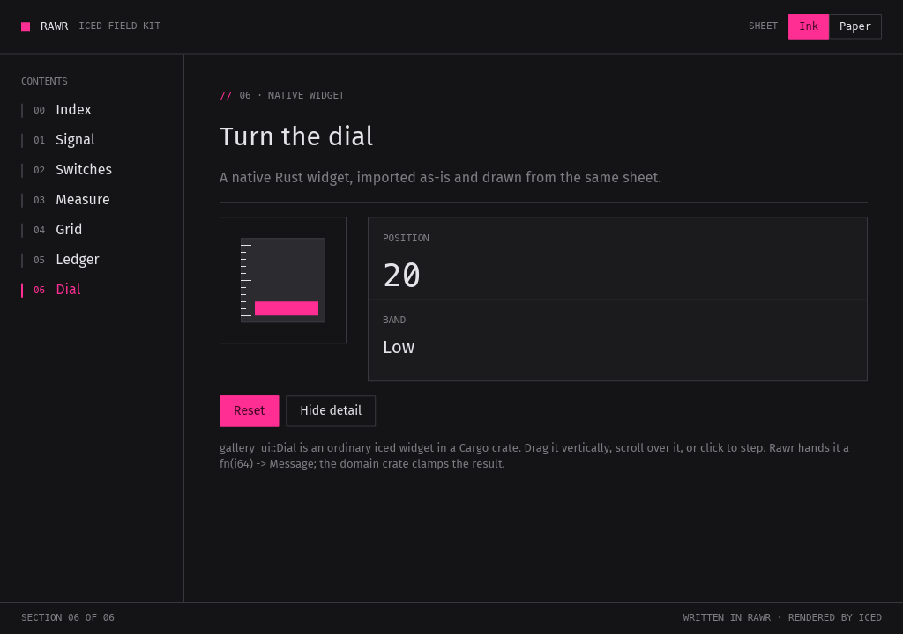

//A scripting language that reads like Rust
Rust Augmented With Rust
You write Rust. Rawr runs the files marked // rawr while you develop. It reloads them when you save. Cargo builds the same crate for release. Rawr checks your code before running it and reports errors the way rustc does. Rawr code runs on an interpreter. Everything it calls into is native Rust.
The rawr crate is the language. Any Rust program can embed it. The rawr command runs Rawr programs. rawr-iced adds iced support. Install it and rawr hands programs that use iced to it. It reloads native iced apps in about 0.2 s.
// rawr
enum Item {
Book { price: f64 },
Coffee { cups: i64 },
}
trait Priced {
fn price(&self) -> f64;
}
impl Priced for Item {
fn price(&self) -> f64 {
match self {
Item::Book { price } => *price,
Item::Coffee { cups } => 3.5 * (*cups as f64),
}
}
}
fn total(items: &[Item]) -> f64 {
let mut sum = 0.0;
for item in items {
sum += item.price();
}
sum
}
fn main() {
let cart = vec![Item::Book { price: 20.0 }, Item::Coffee { cups: 2 }];
println!("total: {}", total(&cart));
}cargo run builds it as Rust. rawr run runs it on the interpreter. Both print total: 27.
Stable rustc (edition 2024) compiles it without warnings.
//Parts
The crate, the command and rawr-iced
The rawr crate knows nothing about windows or widgets. It parses, checks and runs Rawr inside whatever Rust program embeds it.
The rawr command runs Rawr programs. rawr run cart.rs runs one file once and exits.
rawr-iced adds iced support. Install it and rawr hands programs that use iced to it. rawr parses the program once. rawr-iced reads that parse and does not parse it again.
rawr crate | The language. Embed it in any Rust program. Pass source text to Engine::compile, then call a script function with call_fn. Builds on stable Rust 1.95 or newer. |
rawr command | Runs and checks Rawr programs. Builds on stable Rust. |
rawr-iced | Runs programs that use iced. It adds:
|
//! Rawr embedded: Rust code running a Rust-shaped script.
use rawr::{Engine, Scope};
fn main() -> Result<(), Box<rawr::EvalAltResult>> {
let engine = Engine::new();
let ast = engine.compile(include_str!("scripts/cart.rawr"))?;
engine.call_fn::<()>(&mut Scope::new(), &ast, "main", ())
}//Install
Install from git
The language is an ordinary crate. It builds on stable Rust 1.95 or newer.
The rawr command builds on stable Rust too. It runs programs that don’t use iced.
rawr-iced needs more. It needs nightly-2026-07-11 with the rustc-dev and rust-src components. Rawr also builds your own crates with that toolchain. Importing your own Rust crates builds them for the host of the pinned toolchain. It needs a Unix system. It has only been tested on Apple Silicon Macs so far. The rest of rawr-iced should work wherever iced runs. It has only been tested on macOS so far.
Embed the language
cargo add --git https://github.com/airstrike/rawr rawrThen compile a file and call its main, as examples/cart.rs does above.
The rawr command
cargo install --locked --git https://github.com/airstrike/rawr rawr-clirawr-cli installs rawr. A program without iced runs once and exits. It doesn’t build anything or hot reload.
rawr-iced: toolchain, binary and import driver
rustup toolchain install nightly-2026-07-11 --component rustc-dev,rust-srccargo +nightly-2026-07-11 install --locked --git https://github.com/airstrike/rawr rawr-iced-clicargo +nightly-2026-07-11 install --locked --git https://github.com/airstrike/rawr rawr-import --features rustc-driverrawr-iced-cli installs rawr-iced. rawr-import installs rawr-import-driver in the same directory. The driver reads your Rust crates for imports. rawr finds rawr-iced next to itself or on PATH. cargo install builds iced into rawr-iced, so it takes a few minutes. After that, an iced app opens in seconds. A project with its own Rust crates compiles them on its first run.
Start an iced project
rawr new hello && cd hello && rawr runWith rawr-iced installed, rawr new hello writes a Cargo crate. Its src/main.rs starts with // rawr and holds iced’s counter. Edit it while the window is open.
//rawr-iced
iced apps that reload when you save
When your code uses iced, rawr brings in rawr-iced on top of the base language. It runs native iced apps written in Rawr. Rawr code uses the same impl Widget<Message>, column![] and match as iced master.
Save a file marked // rawr and rawr run reloads it in about 0.2 s. The window stays open and keeps its state.
For release, cargo build --release builds the same crate natively. No interpreter ships with it.
// rawr
use iced::Center;
use iced::widget::{Widget, button, column, text};
pub fn main() -> iced::Result {
iced::run(Counter::update, Counter::view)
}
#[derive(Default)]
struct Counter {
value: i64,
}
#[derive(Debug, Clone, Copy)]
enum Message {
Increment,
Decrement,
}
impl Counter {
fn update(&mut self, message: Message) {
match message {
Message::Increment => {
self.value += 1;
}
Message::Decrement => {
self.value -= 1;
}
}
}
fn view(&self) -> impl Widget<Message> {
column![
button("Increment").on_press(Message::Increment),
text(self.value).size(50),
button("Decrement").on_press(Message::Decrement)
]
.padding(20)
.align_x(Center)
}
}// rawr as its first line. cargo run builds it natively. rawr run runs it on the interpreter and reloads it when you save.
The counter is examples/counter from iced master at be88873d, with its test module left out. rawr check accepts it.
//rawr-iced · Commands
Commands
rawr run, rawr check and rawr doctor come with rawr. The others come with rawr-iced. Every command takes a crate directory, its Cargo.toml or a single .rs file. Run rawr --help for every option.
rawr run | Runs a program once. A program that uses iced goes to rawr-iced, which opens the app. Saving a file marked // rawr reloads the app in place. Saving a native module or a dependency rebuilds it natively. |
rawr check | Type-checks without a window and reports errors the way rustc does. Then it runs cargo check on the crate. |
rawr preview | Opens a view marked #[preview] on its own. ← and → step through a group. |
rawr snapshot | Renders every preview to a PNG. --check compares them with the committed images. --update replaces them. |
rawr mcp | An MCP server that lets a coding agent list and render previews, run checks and screenshot the running window. Run rawr init --claude --codex to set it up for Claude Code and Codex. |
rawr doctor | Reports on the environment and the project. |
//rawr-iced · Diagnostics
rustc-style diagnostics
Delete the Decrement arm from the counter and rawr check answers the way rustc would. It shows the error code, the span and the missing arm.
error[RAWR-RESOLVE-MATCH]: invalid match for `Message`: non-exhaustive patterns; missing Message::Decrement
--> src/main.rs:22:9-26:9
22 | match message {
| ^^^^^^^^^^^^^^^
| ...
26 | }
| ^^^^^^^^//rawr-iced · Rust imports
Import your own Rust crates without writing bindings
Add a crate to [dependencies] in Cargo.toml and use it. Rawr reads only the Rust items your code uses. You can import custom iced widgets from your own crates.
gallery_ui::Dial is an ordinary iced Widget written in Rust. RawrGallery drives it from src/dial.rs, which starts with // rawr.
[dependencies]
gallery-ui = { path = "rust/gallery-ui" }// rawr
use gallery_ui::Dial;
let face = container(Dial::new(self.value, Message::Turn).range(0..=100))
.padding(LOOSE)
.style(inset);
rawr snapshot renders it.//rawr-iced · ?play
Render a snippet in Discord
In a Discord channel where the bot is turned on, write ?play over a code block with a view or a whole app, and it replies with the frame. The playground does the same in a browser. You don’t need to install anything.

?play 160x170 msg=Message::Increment
```rust
use iced::Center;
use iced::widget::{Widget, button, column, text};
// … the rest of the counter
```rawr-play drew this counter after one Increment. The bot uses the same renderer.
//Status
Pre-alpha
The language crate and the rawr command build on stable Rust. They have no platform-specific code. Importing your own Rust crates builds them for the host of the pinned toolchain. It needs a Unix system. It has only been tested on Apple Silicon Macs so far. The rest of rawr-iced should work wherever iced runs. It has only been tested on macOS so far. rawr-iced follows iced master and pins one nightly. APIs, commands, file formats and error codes will change without notice.
Rawr doesn’t cover all of Rust yet. The language docs list what is missing. If it rejects valid Rust that it claims to support, that’s a bug. Please report it with a small reproduction.